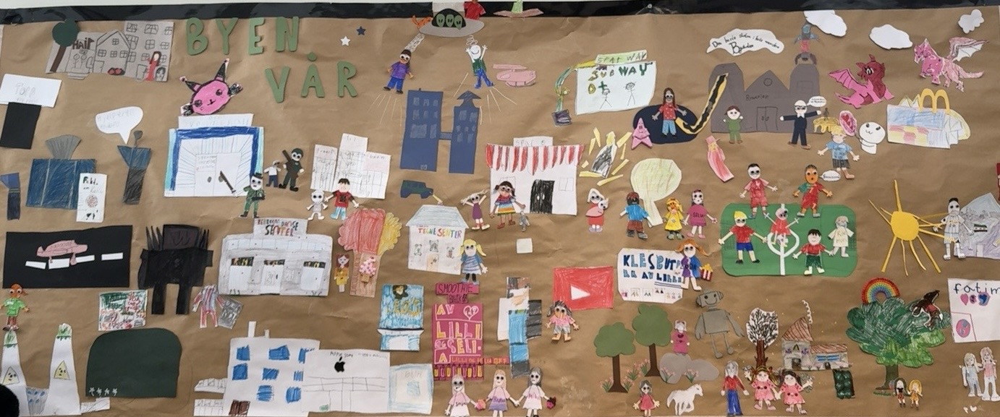

Velkommen til Oddevika
Ordføreren må reise bort i seks uker. Nå trenger byen hjelp! Elevene får utforske samfunnsroller, samarbeide om oppdrag og utvikle Oddevika videre. Ressursene kan tilpasses eget nærmiljø, trinn og fag.

Til deg som vil prøve opplegget: Start med ukeplanen og introduksjonsfilmen. Last deretter ned brevene og oppdragene du vil bruke. Alle ressursene åpnes direkte – uten telefonnummer eller betaling.
Kom i gang
Oppdrag og elevressurser
Jobbsøknad – skriverammeEn enkel skriveramme for valg av yrke i byen.Klassebamsen er borte!Et etterforskningsoppdrag fra politimesteren.BranntilsynUndersøk brannsikkerheten på skolen.FørstehjelpskursOppdrag om å planlegge førstehjelpskurs.Oddeviklekene – brev fra ordførerenPlanlegg lekene, oppgavene og arrangementet.
Eksempler og verktøy
Uke for uke
Uke 0Hva er et demokrati?
Uke 1Ordføreren er borte!
Uke 2Hvem jobber i en by?
Uke 3Vi trenger folk til byen!
Uke 4Innbyggerne trenger oss!
Uke 5Oddeviklekene
Uke 6Ordføreren er tilbake!
Faglig forankring
Læringsdesignet bygger blant annet på trialogisk læring, felles kunnskapsobjekter, elevaktørskap, refleksjon og samspill med nærmiljøet.
Se prosjektposterenOversikt over opplegget og designprinsippene.↗